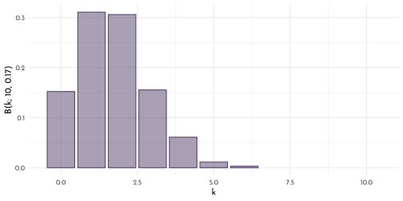
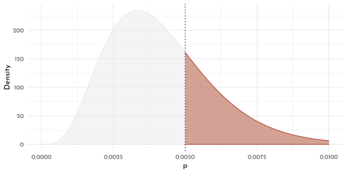
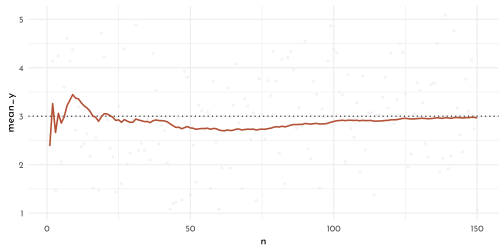
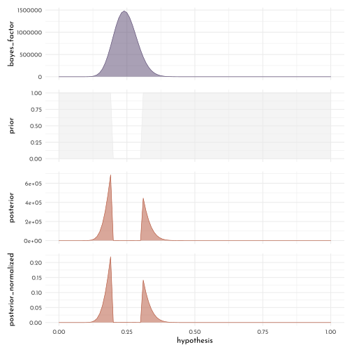
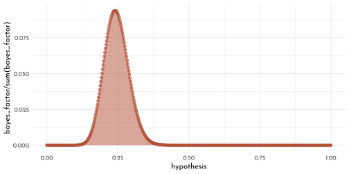
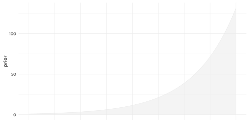

11 Bayesian Statistics the Fun Way
by Will Kurt
11.1 Conditioning Probabilities
\[ \begin{eqnarray} D & = & observed~data\\ H_{1} & = & Hypothesis\\ X & = &prior~belief\\ \end{eqnarray} \]
Allow us to formulate the probability of the observed data given our hypothesis and our prior belief.
\[ P(D | H_{1}, X) \]
To compare different hypothesis, use the ratio of probabilities (odds):
\[ \frac{P(D | H_{1}, X)}{P(D | H_{2}, X)} > 1 \]
11.2 Combining Probailities based on logic
Rules for \(AND\) (\(\land\)), \(OR\) (\(\lor\)) and \(NOT\) (\(\neg\)).
\(NOT:\)
\[ \begin{eqnarray} P(X) & = & p\\ \neg P(X) & = & 1 - p \end{eqnarray} \]
\(AND\)
\[ \begin{eqnarray} P(Y) & = & q \\ P(X) \land P(Y) & = & P(X,Y) = p \times q \end{eqnarray} \]
\(OR\) (mutually exclusive events):
\[ P(X) \lor P(Y) = P(X),P(Y) = p + q \]
while:
\[ P(X) \land P(Y) = 0 \]
\(OR\) (non-mutually exclusive events):
\[ P(X) \lor P(Y) = P(X) + P(Y) - P(X, Y) \]
11.3 The binomial distribution
Factorial (factorial(x)):
\[ x! = x \times x-1 \times x -2 ... \]
The binomial coefficient (choose(n, k)):
\[ {n \choose k} = \frac{n!}{k! \times (n - k)!} \]
The binomial distribution (a Probability Mass Function, PMF):
\[ B(k;n,p) = {n \choose k} \times p^k \times (1 - p) ^{n-k} \]
wdh <- 5000
n <- 10
p = 0.5
tibble(k = rbinom(wdh, n , p)) %>%
group_by(k) %>%
count(name = "nn") %>%
ungroup() %>%
ggplot(aes(x = k, y = nn/wdh)) +
geom_bar(stat = "identity", color = clr1, fill = fll1) +
labs(x = "k", y = glue("B(k; {n}, {p})")) +
coord_cartesian(xlim = c(-.5, 10.5))
n <- 10
p = 1/6
tibble(k = rbinom(wdh, n , p)) %>%
group_by(k) %>%
count(name = "nn") %>%
ungroup() %>%
ggplot(aes(x = k, y = nn/wdh)) +
geom_bar(stat = "identity", color = clr1, fill = fll1) +
labs(x = "k", y = glue("B(k; {n}, {round(p,2)})")) +
coord_cartesian(xlim = c(-.5, 10.5))
Cumulative probability to have at least \(x\) successes in \(n\) trials (pbinom(x-1, n, p, lower.tail = FALSE)):
\[ \sum_{k=x}^n B(k;n,p) \]
Similarly, less then \(x\) successes in \(n\) trials (pbinom(x, n, p)):
\[ \sum_{k=0}^{x-1} B(k;n,p) \]
11.4 The beta distribution
\[ Beta(p;\alpha,\beta) = \frac{p^{\alpha -1} \times (1 - p)^{\beta - 1}}{beta(\alpha, \beta)} \]
Example for an \(n = 41\), with \(\alpha = 14\) (successes) and \(\beta = 27\) (fails).
alpha <- 14
beta <- 27
ggplot(tibble(x = seq(0, 1, length.out = 3)), aes(x)) +
stat_function(fun = function(x){ dbeta(x, shape1 = alpha, shape2 = beta) },
geom = "area", color = clr1, fill = fll1, n = 500) +
labs(x = "p", y = "Density")
Probability, that chance of sucess is less than 0.5:
\[ \int_{0}^{0.5} Beta(p; 14, 27) \]
x_cutoff <- 0.5
integrate(function(p){ dbeta(p, 14, 27) }, 0, x_cutoff)#> 0.9807613 with absolute error < 5.9e-06ggplot(tibble(x = seq(0, 1, length.out = 3)), aes(x)) +
stat_function(fun = function(x){ dbeta(x, shape1 = alpha, shape2 = beta) },
geom = "area", color = clr0, fill = fll0, n = 500) +
stat_function(xlim = c(0, x_cutoff),
fun = function(x){ dbeta(x, shape1 = alpha, shape2 = beta) },
geom = "area", color = clr2, fill = fll2, n = 500) +
geom_vline(xintercept = x_cutoff, linetype = 3) +
labs(x = "p", y = "Density")
alpha <- 5
beta <- 1195
x_cutoff <- 0.005
integrate(function(p){ dbeta(p, alpha, beta) }, x_cutoff, 1)#> 0.2850559 with absolute error < 1e-04ggplot(tibble(x = seq(0, .01, length.out = 3)), aes(x)) +
stat_function(fun = function(x){ dbeta(x, shape1 = alpha, shape2 = beta) },
geom = "area", color = clr0, fill = fll0, n = 500) +
stat_function(xlim = c(x_cutoff, .01),
fun = function(x){ dbeta(x, shape1 = alpha, shape2 = beta) },
geom = "area", color = clr2, fill = fll2, n = 500) +
geom_vline(xintercept = x_cutoff, linetype = 3) +
labs(x = "p", y = "Density")
Exercises
# 1)
integrate(function(p){ dbeta(p, 4, 6) }, 0.6, 1)#> 0.09935258 with absolute error < 1.1e-15# 2)
integrate(function(p){ dbeta(p, 9, 11) }, 0.45, 0.55)#> 0.30988 with absolute error < 3.4e-15# 3)
integrate(function(p){ dbeta(p, 109, 111) }, 0.45, 0.55)#> 0.8589371 with absolute error < 9.5e-15ggplot(tibble(x = seq(0, 1, length.out = 3)), aes(x)) +
stat_function(fun = function(x){ dbeta(x, shape1 = 9, shape2 = 11) },
geom = "area", color = clr0, fill = fll0, n = 500) +
stat_function(fun = function(x){ -dbeta(x, shape1 = 109, shape2 = 111) },
geom = "area", color = clr1, fill = fll1, n = 500) +
labs(x = "p", y = "Density")
11.5 Bayes’ Theorem
conditional probability
The probability of A given B is \(P(A | B)\)
Dependence updates the product rule of probabilities:
\[ P(A,B) = P(A) \times P(B | A) \]
(This also holds for independend probabilities, where \(P(B) = P(B|A)\))
Bayes’ Theorem (reversing the condition to calculate the probability of the event we are conditioning on \(P(A|B) \rightarrow P(B|A)\))
\[ P(A|B) = \frac{P(A)P(B|A)}{P(B)} \]
The important parts here are the
- posterior probability\(P(H|D)\): how strongly we belief in our hypothesis given the data
- likelyhood\(P(D|H)\): the probability of data if the hypothesis were true
- prior probability\(P(H)\): how likely our hypothesis is in the first place

Unnormalized posterior
\[ P(H|D) \propto P(H) \times P(D|H) \]
11.6 Parameter Estimation (I)
Expectation / mean
\[ \mu = \sum_{1}^{n}p_{i}x_{i} \]
n <- 150
mn <- 3
tibble( y = rnorm(n = n, mean = mn),
n = 1:n,
cum_y = cumsum(y),
mean_y = cum_y / n) %>%
ggplot(aes(x = n, y = mean_y)) +
geom_hline(yintercept = mn, linetype = 3) +
geom_point(aes(y = y), color = clr0, size = .75, alpha = .5) +
geom_line(color = clr2, size = .75)
Spread, mean absolute deviation
\[ MAD(x) = \frac{1}{n} \times \sum_{1}^{n} | x_{i} - \mu| \]
Spread, variation
\[ Var(x) = \frac{1}{n} \times \sum_{1}^{n} (x_{i} - \mu) ^{2} \]
Spread, standard deviation
\[ \sigma = \sqrt{\frac{1}{n} \times \sum_{1}^{n} (x_{i} - \mu) ^{2}} \]
Note that in R, var() and sd() uses \(\frac{1}{n-1}\) as denominator for the normalization:
var_k <- function(x){ (1/length(x)) * sum( (x - mean(x)) ^ 2 ) }
sd_k <- function(x){ sqrt(var_k(x)) }
x <- 1:10
n <- length(x)
var(x) * ((n-1)/n) == var_k(x)#> [1] TRUEsd(x) * sqrt((n-1)/n) == sd_k(x)#> [1] TRUE11.7 The normal distribution
The probability density function (PDF) for the normal distribution (dnorm()):
\[ N(\mu, \sigma) = \frac{1}{\sqrt{2\pi \sigma^2}} \times e ^{- \frac{(x - \mu) ^ 2}{2\sigma^2}} \]
mu <- 20.6
sigma <- 1.62
x_cutoff <- 18
ggplot(tibble(x = seq(mu - 4 * sigma, mu + 4 * sigma, length.out = 3)), aes(x)) +
stat_function(fun = function(x){ dnorm(x, mu, sigma) },
geom = "area", color = clr0, fill = fll0, n = 500) +
stat_function(fun = function(x){ dnorm(x, mu, sigma) },
xlim = c(mu - 4 * sigma, x_cutoff),
geom = "area", color = clr2, fill = fll2, n = 500) +
geom_vline(xintercept = x_cutoff, linetype = 3) +
labs(x = "p", y = "Density")
integrate(function(x){ dnorm(x, mu, sigma) }, 0, x_cutoff)#> 0.05425369 with absolute error < 3.5e-05Known probability mass under a normal distribution in terms of ist standard deviation:
| distance from \(\mu\) | probability |
|---|---|
| \(\sigma\) | 68 % |
| \(2 \sigma\) | 95 % |
| \(3 \sigma\) | 99.7 % |

Excercises
x <- c(100, 99.8, 101, 100.5,99.7)
mu <- mean(x)
sigma <- sd(x)
x_cutoff <- 100.4
ggplot(tibble(x = seq(mu - 4 * sigma, mu + 4 * sigma, length.out = 3)), aes(x)) +
stat_function(fun = function(x){ dnorm(x, mu, sigma) },
geom = "area", color = clr0, fill = fll0, n = 500) +
stat_function(fun = function(x){ dnorm(x, mu, sigma) },
xlim = c(x_cutoff, mu + 4 * sigma),
geom = "area", color = clr2, fill = fll2, n = 500) +
geom_vline(xintercept = x_cutoff, linetype = 3) +
labs(x = "p", y = "Density")
1 - (integrate(function(x){ dnorm(x, mu, sigma) }, mu - sigma, x_cutoff)[[1]] + (1-.68)/2)#> [1] 0.355006211.8 Cummulative Density and Quantile Function
Beta distribution example
Mean of Beta distribution
\[ \mu_{Beta} = \frac{\alpha}{\alpha + \beta} \]
alpha <- 300
beta <- 39700
mu <- alpha / (alpha + beta)
med <- qbeta(.5, shape1 = alpha, shape2 = beta)
bound_left <- .006
bound_right <- .009
11.9 Parameter estimation with prior probabilities
alpha_data <- 2
beta_data <- 3
alpha_prior <- 1
beta_prior <- 41
ggplot(tibble(x = seq(0, 1, length.out = 3)), aes(x)) +
stat_function(fun = function(x){ dbeta(x, shape1 = alpha_data, shape2 = beta_data) },
geom = "line", color = clr0,linetype = 1, n = 500) +
stat_function(fun = function(x){ dbeta(x, shape1 = alpha_prior, shape2 = beta_prior) },
geom = "line", color = clr0,linetype = 2, n = 500) +
stat_function(fun = function(x){ dbeta(x, shape1 = alpha_data + alpha_prior,
shape2 = beta_data + beta_prior) },
geom = "area", color = clr1, fill = fll1, size = .2, n = 500) +
labs(x = "Probability", y = "Density", caption = "**solid:** data; **dashed:** prior; **filled:** posterior") +
coord_cartesian(ylim = c(0, 15)) +
theme(plot.caption = ggtext::element_markdown(halign = .5, hjust = .5))
11.10 Monte CarloSimulation
alpha_a <- 36
beta_a <- 114
alpha_b <- 50
beta_b <- 100
alpha_prior <- 3
beta_prior <- 7
ggplot(tibble(x = seq(0, 1, length.out = 3)), aes(x)) +
stat_function(fun = function(x){
dbeta(x, shape1 = alpha_a + alpha_prior, shape2 = beta_a + beta_prior)
},
geom = "area", aes(color = "a", fill = after_scale(clr_alpha(color))), size = .5, n = 500) +
stat_function(fun = function(x){
dbeta(x, shape1 = alpha_b + alpha_prior, shape2 = beta_b + beta_prior)
},
geom = "area", aes(color = "b", fill = after_scale(clr_alpha(color))), size = .5, n = 500) +
labs(x = "Probability", y = "Density") +
scale_color_manual("Variant", values = c(a = clr0, b = clr2))
n_trials <- 10^5
mc_simulation <- tibble(samples_a = rbeta(n_trials, alpha_a + alpha_prior, beta_a + beta_prior),
samples_b = rbeta(n_trials, alpha_b + alpha_prior, beta_b + beta_prior),
samples_ratio = samples_b / samples_a)
p_b_superior <- sum(mc_simulation$samples_b > mc_simulation$samples_a)/n_trials
p_b_superior#> [1] 0.96019p_hist <- mc_simulation %>%
ggplot(aes(x = samples_ratio)) +
geom_histogram(color = clr2, fill = fll2, size = .2, bins = 20,boundary = 1) +
theme(axis.text.x = element_blank(),
axis.title.x = element_blank())
p_ecdf <- mc_simulation %>%
ggplot() +
stat_function(fun = function(x){(ecdf(x = mc_simulation$samples_ratio))(x)},
xlim = c(range(mc_simulation$samples_ratio)),
geom = "area",color = clr2, fill = fll2, size = .2, n = 500) +
labs(x = "Variant Ratio = Improvement", y = "Cumulative Probability")
p_hist / p_ecdf &
coord_cartesian(xlim = c(0.2,3.3), expand = 0)
11.11 Posterior Odds
For compering Hypotheses:
ratio of posterior:
\[ posterior odds = \frac{P(H_1) \times P(D | H_{1})}{P(H_2) \times P(D | H_{2})} = O(H_{1}) \times \frac{P(D | H_{1})}{P(D | H_{2})} \]
This consists of the Bayes factor:
\[ \frac{P(D | H_{1})}{P(D | H_{2})} \]
and the ratio of prior probabilities
\[ O(H_{1}) = \frac{P(H_1)}{P(H_2)} \]
rough guide to evaluate poterior odds:
| Posterior odds | Strength of evidence |
|---|---|
| 1 to 3 | Interesting but not conclusive |
| 3 to 20 | Looks like we’re onto something |
| 20 to 150 | Strong evidence in favor of \(H_1\) |
| > 150 | Overwhelming evidence |
11.12 Parameter Estimation (II)
dx <- 0.01
bayes_factor <- function(h_top, h_bottom, n_success = 24, n_total = 100){
(h_top ^ n_success * (1 - h_top) ^ (n_total - n_success)) /
(h_bottom ^ n_success * (1 - h_bottom) ^ (n_total - n_success))
}
bayes_fs <- tibble(hypothesis = seq(0, 1, by = dx),
bayes_factor = bayes_factor(hypothesis, h_bottom = 0.5)) %>%
mutate(prior = if_else(between(hypothesis, 0.2, 0.3), .001, 1),
posterior = prior * bayes_factor,
posterior_normalized = posterior / sum(posterior))
p_bayes_factor <- bayes_fs %>%
ggplot(aes(x = hypothesis, y = bayes_factor)) +
geom_area(color = clr1, fill = fll1, size = .3) +
theme(axis.text.x = element_blank(), axis.title.x = element_blank())
p_prior <- bayes_fs %>%
ggplot(aes(x = hypothesis, y = prior)) +
geom_area(color = clr0, fill = fll0, size = .3) +
theme(axis.text.x = element_blank(), axis.title.x = element_blank())
p_posterior <- bayes_fs %>%
ggplot(aes(x = hypothesis, y = posterior)) +
geom_area(color = clr2, fill = fll2, size = .3) +
theme(axis.text.x = element_blank(), axis.title.x = element_blank())
p_posterior_n <- bayes_fs %>%
ggplot(aes(x = hypothesis, y = posterior_normalized)) +
geom_area(color = clr2, fill = fll2, size = .3)
p_bayes_factor /
p_prior /
p_posterior /
p_posterior_n
| hypothesis | bayes_factor | prior | posterior | posterior_normalized |
|---|---|---|---|---|
| 0.24 | 1478776 | 0.001 | 1478.776 | 0.0004708 |
Probability of true chance is smaller “one in two”.
bayes_fs %>%
filter(hypothesis < 0.5) %>%
summarise(p_lower_than_half = sum(posterior_normalized))#> # A tibble: 1 x 1
#> p_lower_than_half
#> <dbl>
#> 1 1.00Expectation of the probability distribution (sum of expectations weighted by their value)
sum(bayes_fs$posterior_normalized * bayes_fs$hypothesis)#> [1] 0.2402704Or (because of gap) choose most likely estimate:
bayes_fs %>%
filter(posterior_normalized == max(posterior_normalized)) %>%
knitr::kable()| hypothesis | bayes_factor | prior | posterior | posterior_normalized |
|---|---|---|---|---|
| 0.19 | 688568.9 | 1 | 688568.9 | 0.2192415 |
bayes_fs %>%
ggplot(aes(x = hypothesis, y = bayes_factor / sum(bayes_factor))) +
geom_area(color = clr2, fill = fll2, size = .3) +
stat_function(fun = function(x){ dbeta(x, shape1 = 24 + 1 , shape2 = 76 + 1) * dx},
geom = "point", shape = 21, color = clr2, fill = fll2,
size = 1.5, n = 500)
Exercises
bayes_fs_e1 <- tibble(hypothesis = seq(0, 1, by = dx),
bayes_factor = bayes_factor(hypothesis, h_bottom = 0.24)) %>%
mutate(prior = if_else(between(hypothesis, 0.2, 0.3), .001, 1),
posterior = prior * bayes_factor,
posterior_normalized = posterior / sum(posterior))
bayes_fs_e1 %>%
ggplot(aes(x = hypothesis, y = bayes_factor / sum(bayes_factor))) +
geom_area(color = clr2, fill = fll2, size = .3) +
stat_function(fun = function(x){ dbeta(x, shape1 = 24 + 1 , shape2 = 76 + 1) * dx},
geom = "point", shape = 21, color = clr2, fill = fll2,
size = 1.5, n = 500)
bayes_fs_e2 <- tibble(hypothesis = seq(0, 1, by = dx),
bayes_factor = bayes_factor(hypothesis, h_bottom = 0.24)) %>%
mutate(prior = 1.05 ^ (seq_along(hypothesis) - 1),
posterior = prior * bayes_factor,
posterior_normalized = posterior / sum(posterior))
bayes_fs_e2 %>%
ggplot(aes(x = hypothesis, y = prior)) +
geom_area(color = clr0, fill = fll0, size = .3) +
theme(axis.text.x = element_blank(), axis.title.x = element_blank()) 
bayes_fs_e2 %>%
ggplot(aes(x = hypothesis, y = posterior_normalized)) +
geom_area(color = clr2, fill = fll2, size = .3)